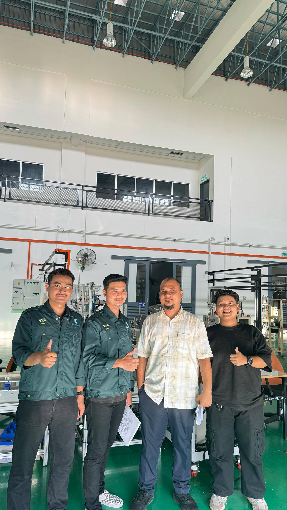
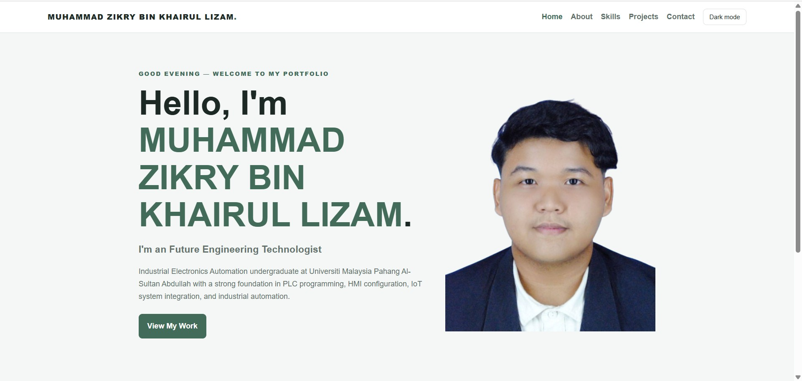
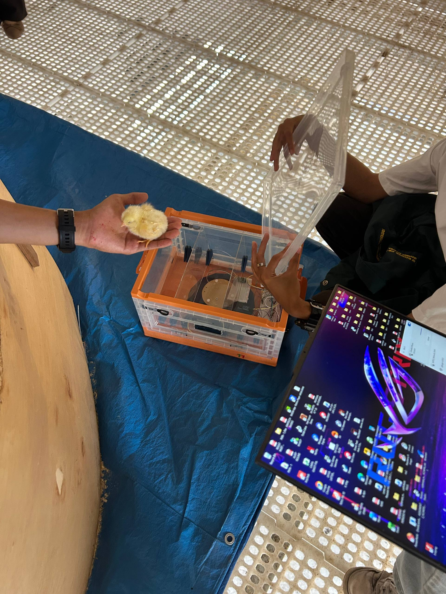

MY WORK
Projects & Work Samples
Automation
Automotive Absorber Assembly Production Line

Problem: Inefficiencies in the assembly line process.
My role: I was the Group Leader and HMI Programmer
Tools: PLC, HMI, COBOT.
Outcome: Improved efficiency and reduced cycle time in the assembly process.
Video LinkWeb
Portfolio Website

Problem: I wanted to showcase my work and skills in a professional manner.
My role: I was the sole developer responsible for the design and implementation.
Tools: HTML, CSS, JavaScript.
Outcome: A responsive and visually appealing portfolio website.
Website LinkEmbedded
Portable Chicks Counterweight

Problem: Manual weighing of chicks is time-consuming and prone to error.
My role: I was the Project Leader and Dashboard Developer.
Tools: HTML, CSS, JavaScript, Arduino, Load Cell, HX711, and IoT Dashboard.
Outcome: User can monitor the weight of chicks in real-time and can bring the data to the cloud for further analysis.